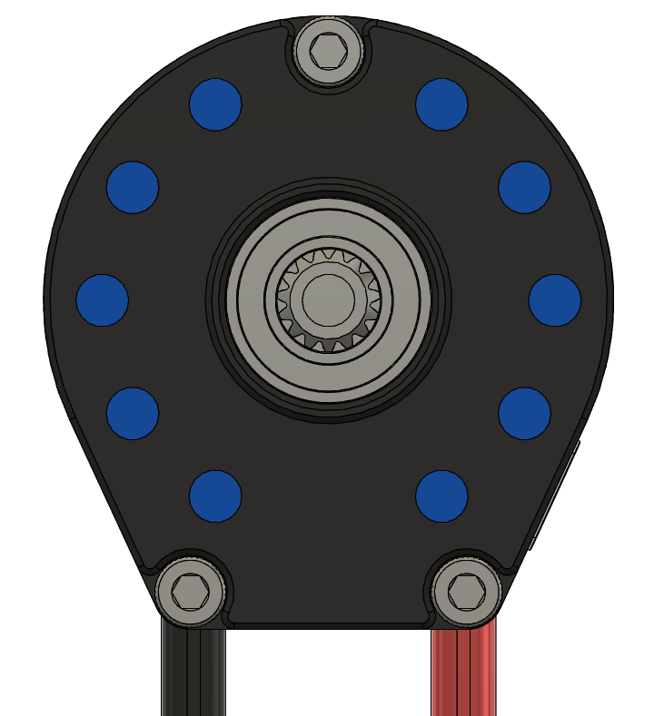

Mounting
Bolt to the front face. Keep the rear connections reachable.

Mounting pattern
| Parameter | Value |
|---|---|
| Holes | Eleven #10-32 blind holes |
| Depth | 10 mm |
| Bolt circle | Ø1.375 in (34.93 mm) |
| Spacing | 30° apart |
| Output shaft | 15T SplineXS |
Full dimensions and the drawing are on Specifications.
Keep the ports reachable
Leave USB-C, CAN, the DFU pinhole, and the status window accessible after the motor is installed — you will use them to configure, recover, and read the motor in the pit.